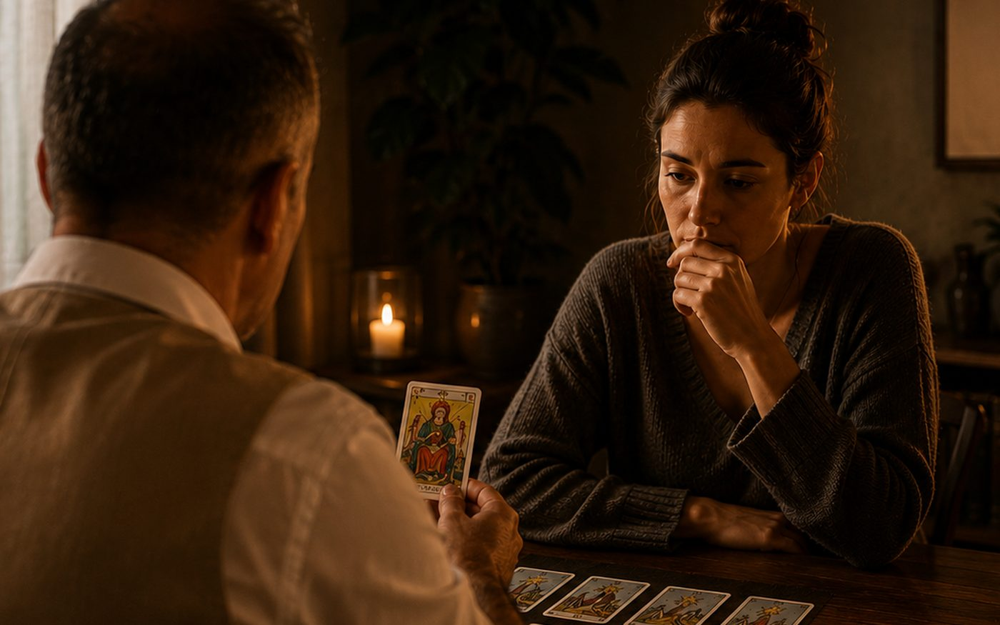
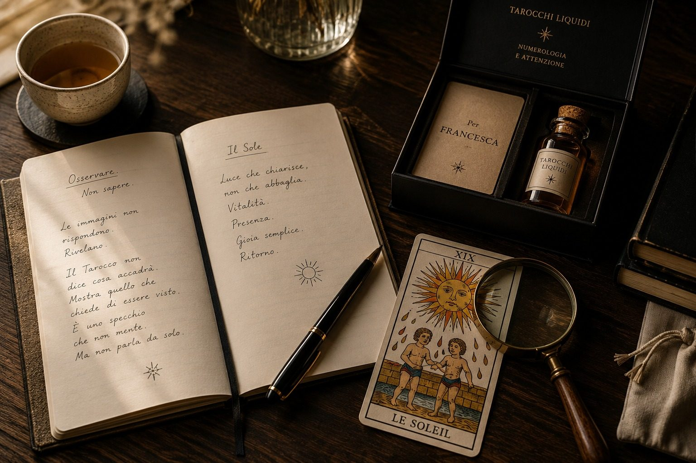
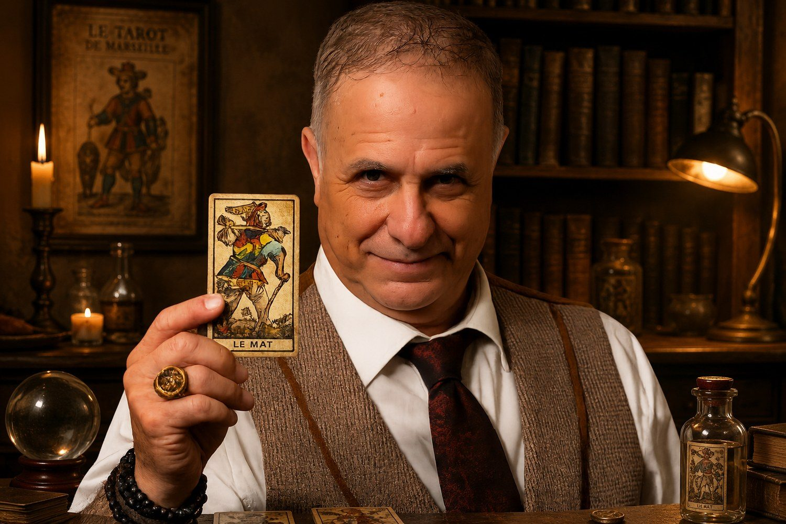

Perché le immagini aiutano a vedere ciò che spesso le parole faticano ancora a raccontare.
Metodo esperienziale con i Tarocchi di Marsiglia
Tarocchi Liquidi
Esperienze che lasciano una Traccia.
Un incontro da cui esci con una domanda più chiara, uno sguardo diverso e una Traccia da portare con te.
Parliamone su WhatsApp
Le esperienze
Ogni esperienza è diversa.
Il mio obiettivo è aiutare a guardare la realtà con occhi nuovi.

La Traccia
Ogni esperienza lascia una Traccia.
Una domanda.
Un incontro.
Una Traccia.
Alla fine dell’esperienza resta qualcosa da portare con sé: una frase, un punto di vista, un gesto, un Arcano Liquido sigillato.
Una Traccia da conservare, rileggere, ricordare.
Il linguaggio
Perché proprio i Tarocchi?
Perché una carta può aprire un punto di vista nuovo su una situazione che si sta vivendo.
Perché ogni incontro lascia una forma concreta: una domanda, una direzione, una Traccia.
Chi guida l’esperienza
Paolo Musetti
Da oltre quarant’anni lavoro con il pubblico attraverso spettacolo, narrazione, ascolto e formazione.
Nei Tarocchi Liquidi porto questa esperienza in un incontro intimo, preciso e umano, dove le carte diventano uno strumento per dare forma a ciò che la persona sta vivendo.
Al centro c’è la persona, la sua domanda e il prossimo passo possibile.
Conosci Paolo
Cosa resta
Cosa resta a chi lo vive
L’esperienza continua oltre il tavolo: in una domanda più precisa, in un’immagine, in una Traccia personale.
Chiarezza
La situazione viene osservata da un’altra angolazione, con parole più semplici e concrete.
Ascolto
L’incontro crea uno spazio protetto, sobrio e umano, adatto anche a contesti eleganti e privati.
Memoria
La Traccia finale rende l’esperienza riconoscibile, personale e facile da ricordare nel tempo.
Inizia da qui
Qual è la domanda che continua a tornare?
A volte la risposta nasce da un modo diverso di guardare.
Parliamone su WhatsApp